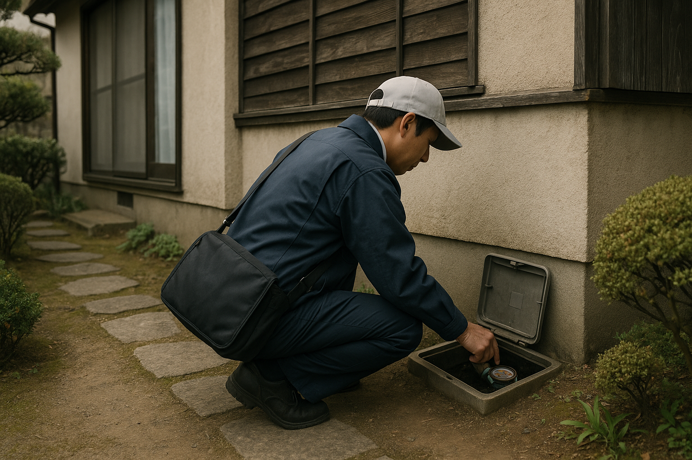

← コラム一覧に戻る

空き家の水道・電気・ガスは、止めるか残すか判断に迷うオーナー様が多いポイントです
実家を空き家として管理し始めるとき、多くのオーナー様が悩むのが水道・電気・ガスの契約をどうするかという点です。全て止めてしまえば基本料金はかかりませんが、それによって別のリスクが生じることもあります。この記事では、ライフラインごとの考え方と手続きのポイントを解説します。
電気・ガスは止めても大きな支障が少ない
電気は、庭木の手入れや室内の換気作業で照明・電動工具を使う場合を除けば、契約を解約しても管理に大きな支障は出にくい設備です。ガスも同様に、使用予定がなければ休止・解約して問題ありません。再開時には立会いや開栓作業が必要になりますが、手続き自体は数日〜数週間で完了します。
水道は残しておくメリットがある
一方で水道については、解約せず「休止」ではなく基本契約を残すことを勧めるケースがあります。理由は、庭の水やり、外壁・窓の清掃、来客時のトイレ使用など、管理作業のたびに水が使えると効率的だからです。また、配管内に水が流れない状態が長く続くと、パッキンの劣化や悪臭の原因になることもあります。
| 設備 | 止める場合の影響 | 残す場合の目安費用 |
|---|---|---|
| 電気 | 清掃・点検時に照明や工具が使えない | 基本料金は契約により異なる |
| ガス | 使用予定がなければ影響は小さい | 休止中は基本料金がかからない事業者が多い |
| 水道 | 清掃・水やりのたびに水を運ぶ手間が発生 | 基本料金のみで月数百円〜程度が目安 |
金額は自治体や契約内容によって異なるため、あくまで目安としてご確認ください。
冬場に水道管の水を抜かずに放置すると、凍結による破裂で室内が水浸しになる事故につながることがあります。鹿児島市街地では発生頻度は高くありませんが、霧島市など標高の高いエリアでは冬の冷え込みに注意が必要です。長期間人が来ない場合は、元栓を閉めて配管の水を抜いておくと安心です。
名義変更・解約の手続き
契約者本人が亡くなっている場合、水道・電気・ガスの名義変更や解約には相続人であることが分かる書類の提示を求められることがあります。各事業者のコールセンターやWebサイトで必要書類を確認し、複数の設備をまとめて手続きすると手間を減らせます。
📌 空き家のライフライン整理チェックリスト
- 電気・ガス・水道それぞれの契約者名義が現在誰になっているか
- 定期的な管理作業（清掃・通水・庭の手入れ）で水道を使う予定があるか
- 冬季に水道管の凍結対策（水抜き）が必要な地域かどうか
- 解約・休止の連絡先と必要書類を事業者ごとに確認したか
TAMARIEでは、空き家の定期巡回・清掃サービスにあわせて、ライフラインの契約整理についてもアドバイスしています。「何を残して何を止めればいいか分からない」という段階からご相談いただけます。